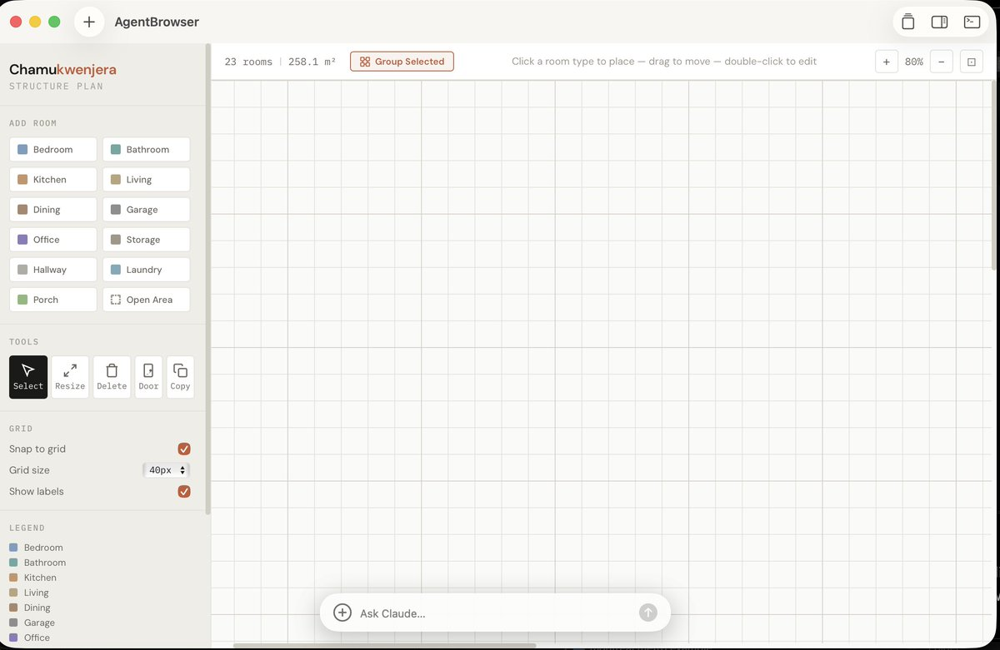
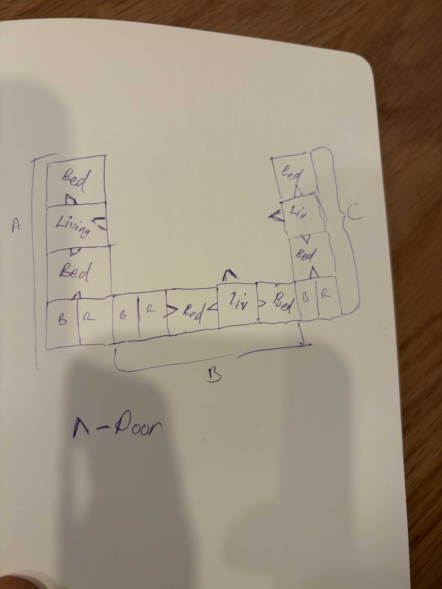
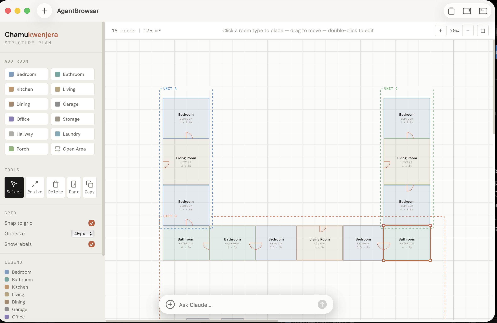
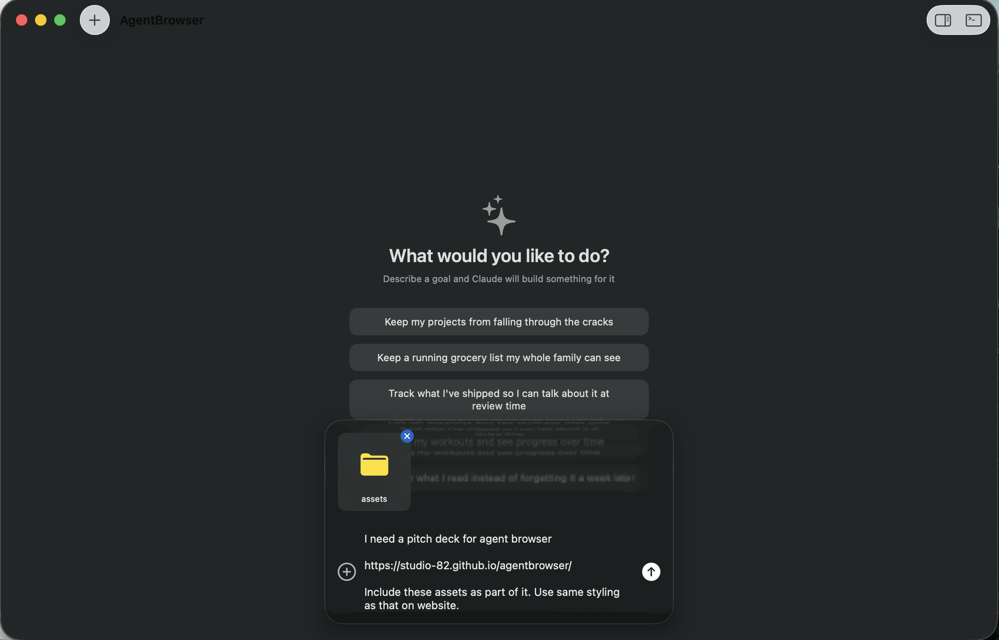

Describe what you want. Get a personalized outcome, built on demand.
Tools like Claude Code have extraordinary capabilities. But those capabilities are locked inside a chat interface. The gap between what AI can do and what you can actually get from it is the interface itself.
AgentBrowser doesn't give you text — it gives you what you asked for. Functional tools, visual dashboards, interactive canvases — whatever outcome you need, built on demand.
"If you can describe the outcome, you can have it."
Know what outcome you want. It can be vague or extremely specific — the tool adapts to either.
Tell AgentBrowser what you need. Attach images, sketches, links, files — whatever helps convey the outcome.
Get a functional result you can use, refine, and share. Not a suggestion — the real thing.
Building a house remotely — from sketch to cost estimates
Slides 5 – 10Updating website copy with AI-powered marketing suggestions
Slides 11 – 13Yes — the one you're reading right now
Slides 14 – 16A person living in the US wants to build a house in Southern Africa. They wanted to sketch out what the structure would look like and send it to people on the ground to get an idea of how things would work. Gave them access to AgentBrowser.
"I want to create a rough sketch of a house plan. Using blocks for each room. I want to be able to name each and move them around and also having the type of room (toilet, bedroom, etc). Something for some form of simple planning. It should also support negative spaces (open area) Make it a light mode interface."

From one sentence, AgentBrowser built a fully interactive floor plan tool — room types, drag-and-drop, dimensions, grid snapping. A blank canvas ready for their vision.
The blank canvas was impressive on its own. But it gets better — since this is connected directly to the Claude CLI, the user could attach the rough sketch they'd made by hand and have it interpreted and applied to the canvas.
"Here's a sketch of the plan, apply it to the canvas. The triangle like item is a door, the BR is the bathroom (that split is wash area vs toilet)"

The hand-drawn sketch
The resultThe sketch became a good starting point. From here, we could explore possibilities — telling Claude to improve the house plan, suggest edits that were more sensible. The person isn't an architect, so some design decisions like bathroom placement weren't appropriate. Claude could assist, spinning up different results to work with.
We'd gotten a better visualization to send to the people on the ground to illustrate the desired design.
When you're building a house from another country, one of the hardest parts is getting accurate material prices. You're thousands of miles away (US → Southern Africa), relying on whoever is on the ground — and hoping they don't overcharge you.
So we put this into AgentBrowser, since it already had the dimensions.
"I want to be able to group items under one house / structure. Imagine drawing a rect over existing items to select them or doing a multi select to make it simple. Then I can call that group or house. Should be able to see it in sidebar on right with sub elements expanding when I click on it. Reason why I need that grouping is so that I can start doing material estimates for those clusters of houses / structures. For price estimates I'd want base prices based on a store then when I change dimensions these estimates for the different items can come up."
"When showing the cost estimate here I need to have an arrow to the page so that I can actually go to it and see the price on the website. Then as I click on the different drop downs here, I can select the store which is good but I can't see where this estimate is coming from or how it's being calculated. Need to make sure that there is that level of source showing plus formula showing need to know the different constituents in their broken down detail. Even for the calculation of the number of materials. I would want to hover or click on a value like 52 tiles and understand how it got to that number or even with the bricks to say if each brick is this dimension and the dimensions are like this, it will make require this many bricks for such a house."
Within a couple of hours we had material estimates, rough price ranges, every calculation transparent and linked back to its source. A person who had never done construction could now have an informed conversation with contractors — with data.
That's the outcome AgentBrowser delivers — not a list of suggestions in a chat window, but a functional tool that gave someone real leverage over a problem they couldn't solve before.
We built the AgentBrowser website within the AgentBrowser tool itself. Since we were using AgentBrowser, it meant we could see the output and interact with it directly using Claude Code. We then wanted to update the language on the site to make it better for SEO and marketing purposes.
"npx skills add coreyhaines31/marketingskills put in this skill"
"Using the marketing skills item. Put a floating panel that can show suggested edits when I hover over the different elements in the page. What would be the best way to market this?"
"Add functionality in floating panel to place in the suggestions in the actual place. This should change the actual underlying page item."
"For the suggestions, place at least about three each so that I can choose which one best fits what I'm going for"
"Put the commit trigger as a button within the hover. More like an accept changes type of thing. Clicking on it essentially tells you to commit"
Now we could hover over any element on the page, see multiple copy suggestions, and accept the ones we liked — all from within the same tool that built the site. No switching between apps. No copy-pasting between a chatbot and an editor.
The outcome: a better website, refined through natural conversation.
We started the application form on your website and got to the page where it asked for the pitch deck. Decided what better way to make it than in here. Plus also I wanted to have some fun with the tool.
We opened AgentBrowser, described the outcome we wanted — a pitch deck that tells the story of the tool through real examples — attached the assets, and let it build.

One prompt, one assets folder, one linkA single prompt, a folder of assets, and a link to the website for styling reference. That's all AgentBrowser needed to start building your outcome.
There are no screenshots or video to show here — you're already using the outcome from the tool.
The AI already knows how to build. The missing piece was never intelligence — it was a surface where the results could live, breathe, and be used.
Claude can build almost anything. That means your outcomes are limitless — from floor plans to pitch decks to data tools.
As your needs change, just describe the new outcome. No rebuilding, no new tools to learn — just a new sentence.
Everything runs on your machine and is built on your machine.
Not suggestions in a text box. Functional, visual, interactive tools you can use immediately and share with others.
macOS · Free · Powered by Claude Code